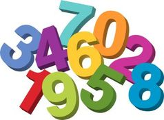

Se submeter no Mooshak, deverá submeter uma classe ED198 contendo um programa completo para resolver o problema (ou seja, com o método main).

O Pedro e a Luísa estão a jogar um novo jogo. Um deles escreve uma sequência de números inteiros (positivos ou negativos) e o outro tem de tentar descobrir qual a sequência contígua (um ou mais números consecutivos) que dá origem à maior soma possível.Imagina por exemplo que a Luísa escolhe a seguinte sequência de números:
-1 4 -2 5 -5 2 -20 6
Alguns exemplos de sequências contíguas seriam as seguintes:
|-1 4 -2 5 -5 2 -20 6| (soma=-11) -1 4 -2 5 -5 |2 -20 6| (soma=-12) |-1 4 -2 5 -5 2|-20 6 (soma=3) -1 4 -2 |5|-5 2 -20 6 (soma=5) -1 |4 -2 5|-5 2 -20 6 (soma=7)
A última destas sequências corresponde precisamente à melhor sequência contígua possivel que o Pedro poderia escolher, ou seja, a que tem maior soma.
Podes ajudar os dois amigos a jogarem este jogo?
Dada uma sequência de N números inteiros, a tua tarefa é calcular a maior soma que uma sequência contígua de um ou mais números da sequência pode formar.
Na primeira linha do input vem um número N (1 ≤ N ≤ 200 000), a quantidade de números na sequência.
Depois vem uma outra linha contendo exactamente N números inteiros separados por um único espaço, indicando a sequência. Os números da sequência estão entre -2000 e 2000 (inclusive).
O output é constituído por uma única linha contendo a soma máxima de uma subsequência contígua, como atrás descrito.
Input
8 -1 4 -2 5 -5 2 -20 6
Output
7